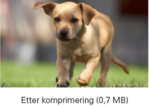
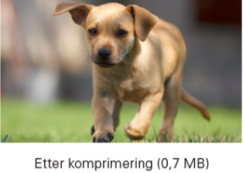

Destruktiv komprimering
 

For enkel grafikk og figurar kan tapsfri komprisjon gi ei svært effektiv komprimering. Men i fotografi er det ikkje så ofte at mange bildepunkt etter kvarandre er heilt like. Då kjem destruktiv kompresjon inn. I eit bilde er det vanleg at det er ei stor mengd med detaljar som auga vårt ikkje klarer å oppfatte. Dersom vi då forenklar bildet ut frå kunnskapen om kva det er nødvendig å ta med kan vi komprimere ganske kraftig. Ved første augekast er det ikkje sikkert du kan sjå forskjell på bilda, men dess meir du zoomar inn dess lettare kan du sjå kva som har skjedd. I destruktiv komprimering tar ein som regel vekk berre ubetydelige detaljar som ikkje gjer noko reel forskjell.